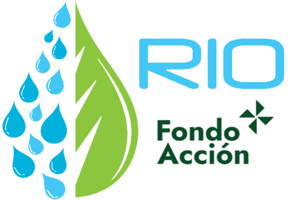
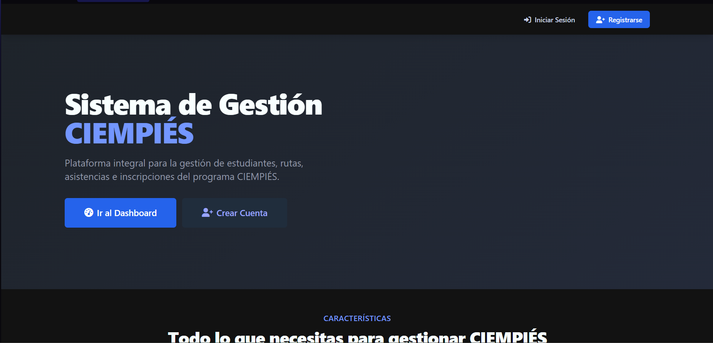
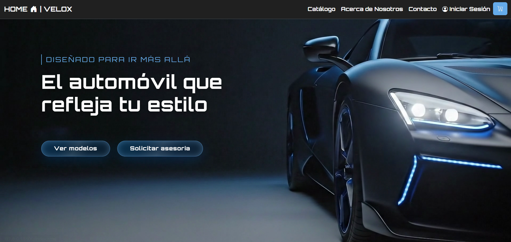
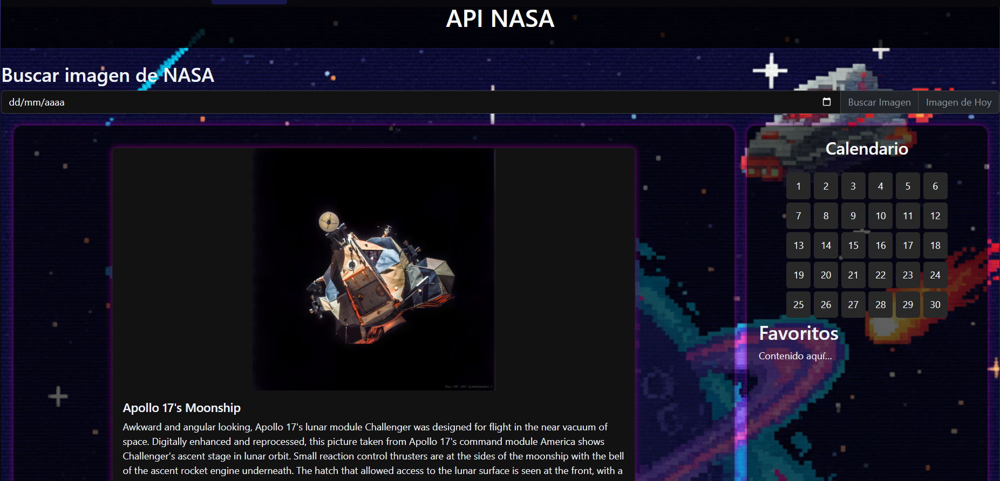

¡Bienvenido!
Sobre Mí
¡Hola! Soy Santiago, desarrollador full stack con experiencia diseñando e implementando sistemas completos: desde arquitecturas de autenticación y control de acceso, hasta módulos de gestión financiera y migraciones de stack en producción. Trabajo tanto en backend (Java, Spring Boot, bases de datos relacionales) como en frontend (Vue, React, JavaScript), combinando solidez técnica con atención al diseño visual.
Me apasiona resolver problemas reales con código limpio y escalable, sin perder de vista la experiencia del usuario. Si buscas un desarrollador que entienda tanto la lógica detrás de un sistema como el impacto visual de una interfaz, ¡hablemos de tu próximo proyecto!
Mis Habilidades
Desde la arquitectura backend y la seguridad de los datos, hasta la experiencia de usuario en el frontend — estas son las tecnologías que uso para construir sistemas completos, seguros y visualmente atractivos.
Tecnologías


Proyectos

Sistema RIO
RIO es un sistema corporativo desarrollado para optimizar los procesos internos de Fondo Acción y centralizar la gestión de proyectos enfocados en la conservación ambiental y la protección social.

SGI Ciempies
SGI Ciempiés es una plataforma desarrollada para centralizar la gestión operativa del programa de transporte escolar "Ciempiés - Caminos Seguros". El sistema digitaliza la administración de estudiantes, rutas, colegios, monitores y asistencias, además de automatizar reportes estadísticos y notificaciones masivas.

Proyecto Velox
Velox es un ecommerce de venta de autos de lujo, dirigido a un público exclusivo que busca una experiencia de compra tan elegante y cuidada como los vehículos que ofrece, con catálogo administrable y un diseño pensado para transmitir exclusividad.

API NASA
Proyecto educativo de front-end en el que atraves del consumo de la API de la NASA y el uso del local storage, se hace un calendario en el que podemos observar fotografias tomadas por la NASA tiendo en cuenta un dia en especifico
Contacto
¿Tienes un proyecto, una idea o una oportunidad? Hablemos.